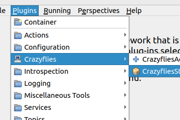
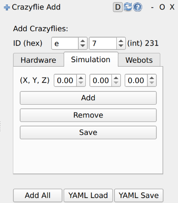
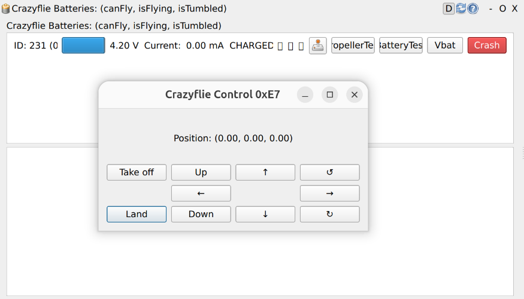

Getting started
Make sure to have the installation done before starting with this guide.
Configuration
Start by configuring the hardware as well as the software components.
Note
If you only want to use the simulation, you can skip this section and skip to Usage section immediately.
Hardware
If you want to use real hardware, you need to configure your Crazyradio, Crazyflies (and motion capture system).
Software
Lastly you need to configure the software. This includes setting up the motion capture system, as well as the Crazyflie configuration.
Additional Configuration:
Usage
The crazyflies package provides a convenient launch file (framework.launch.py) which allows you to launch with different configurations such as with real hardware, the simulation, webots or sitl.
We will first show how to use the framework with the simulation, using it with real hardware is very similar and selfexplanatory afterwards.
Sourcing (needs to be done in every new terminal):
source install/setup.bash
Launch the framework with:
ros2 launch crazyflies framework.launch.py backend:=simulation
Now it is time to connect your first crazyflie. To simplify this process ds-crazyflies provides two panels for RQT.
For this RQT first needs to discover these plugins, for this run the following command in a new terminal (in the ds-crazyflies folder):
source install/setup.bash rqt --force-discover

You should now find two new plugins in the RQT plugin list. Add both Plugins to your View.
Note
When inside VSCode
unset GTK_PATHneeds to be run before starting RQT, otherwise it will not start.The Add Plugin can then be used to connnect the crazyflie.
Choose the correct backend and provide the necessary parameters.

The connected crazyflies are now listed in the Crazyflie List plugin.
From here you can monitor the battery voltage and connection status of each crazyflie. For the simulated crazyflies most values do not update. When a crazyflie disconnects it will be greyed out.

The small control button to the left of the PropellerTest button opens a small high level commander interface.
Here you can send takeoff, goTo and land commands to the crazyflie. The position field should also update correctly.


When hardware is selected it is necessary to set the radio_channels argument: If using external tracking (e.g. Vicon, OptiTrack), set tracked:=true.
Note
Currently OptiTrack compilation is broken. Only Vicon is currently supprted.
ros2 launch crazyflies framework.launch.py backend:=hardware radio_channels:=[80] tracked:=false
To launch in SITL mode there is an extra argument
sitlwhich needs to be set to true.ros2 launch crazyflies framework.launch.py backend:=hardware sitl:=trueThis will automaitcally start a SITL crazyflie, which can be added just like a hardware crazyflie.
Starting with webots will not automatically open Webots. You need to open Webots seperately and select the provided world (see Installation). (The Framework will then connect as extern controller to the Webots simulation).
ros2 launch crazyflies framework.launch.py backend:=webotsThen in the RQT-Panel add a webots crazyflie with id 0.
The RQT-Plugins are just convenient buttons for service calls and topic publications. You can also connect a crazyflie by calling the appropriate service directly.
Connect a Crazyflie using one of the following commands. Both examples use ID 231 (hexadecimal E7), matching the control commands below. Replace the ID and hardware channel/address as needed for your setup.
For a hardware Crazyflie:
ros2 service call /crazyflie_hardware_gateway/add_crazyflie crazyflie_interfaces/srv/AddCrazyflie \ "{uri: 'radio://0/80/2M/E7E7E7E7E7', initial_pose: {position: {x: 0.0, y: 0.0, z: 0.0}, orientation: {w: 1.0}}, type: 'default'}"
For a simulated Crazyflie:
ros2 service call /crazyflie_simulation_gateway/add_crazyflie crazyflie_interfaces/srv/AddCrazyflie \ "{uri: 'sim://231', initial_pose: {position: {x: 0.0, y: 0.0, z: 0.0}, orientation: {w: 1.0}}}"
Check that the response contains
success: truebefore continuing.When the Crazyflie is connected, use its high level commander services. Wait for each movement to finish before sending the next command.
Takeoff
ros2 service call /cf231/takeoff crazyflie_interfaces/srv/Takeoff \ "{group_mask: 0, height: 1.0, yaw: 0.0, duration: {sec: 4, nanosec: 0}}"
GoTo
ros2 service call /cf231/go_to crazyflie_interfaces/srv/GoTo \ "{group_mask: 0, relative: false, goal: {x: 0.0, y: 1.0, z: 1.0}, yaw: 0.0, duration: {sec: 4, nanosec: 0}}"
Land
ros2 service call /cf231/land crazyflie_interfaces/srv/Land \ "{group_mask: 0, height: 0.0, yaw: 0.0, duration: {sec: 4, nanosec: 0}}"
Checkout the Safeflie documentation next as an example of how to use the framework in your own nodes.